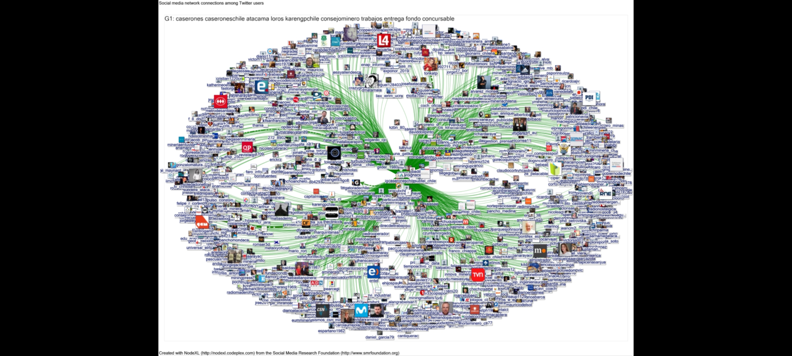
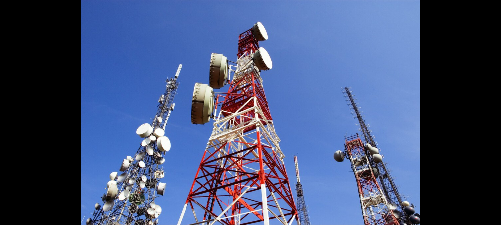

¿Quienes Somos?
La Empresa de Redes de Telecomunicacion "Comunica Todo" es una empresa de origen chileno fue fundada el 18 de Marzo del
2001 y durante todo ese tiempo la empresa "Comunica Todo" a estado en el nuevo milenio ayudando en la instalacion de redes
en todo el pais, durante ese tiempo la primera empresa se ubicaba en la capital Santiago de Chile y con el tiempo fuimos
la empresa 1# en Redes de Telecomunicacion en Chile, y conforme pasaba el tiempo, nuestra empresa se volvio el auxiliar
de todos los hogares chilenos que necesitaban una red de Internet.

Nuestra Vision
Como Empresa de Telecomunicaciones tenemos la vison de llevar nuestra tecnologia y los servicios que prestamos, a todos los
hogares de habla hispana y darles un servicio de Internet de calidad, ademas otra de nuestras visiones es en convertirnos en
una empresa de telecomunicaciones reconocida mundialmente donde siempre tratamos de destacar es en la instalacion de redes
de tipo empresarial, donde nosotros le damos confianza a las empresas de que estan poniendo en buenas manos todos sus datos
a nuestra tecnologia en servidores, cableado estructurado y closet de comunicaciones.

Nuestra Mision
La mayor Mision de la empresa es que en cada pais de habla hispana se encuentre un servicio de "Comunica Todo" para que ellos
puedan experimentar la calidad que tiene nuestra empresa, durante 20 años de existencia nuestra empresa a tenido la oportunidad
de incursionar en paises del extranjero como puede ser : Argentina, Paraguay, Brazil, Peru, Honduras, Colombia, Costa Rica y Belice
aun falta mucho por recorrer haci que nuestra empresa se mantiene en esa vision y nos esforzaremos por lograrla.